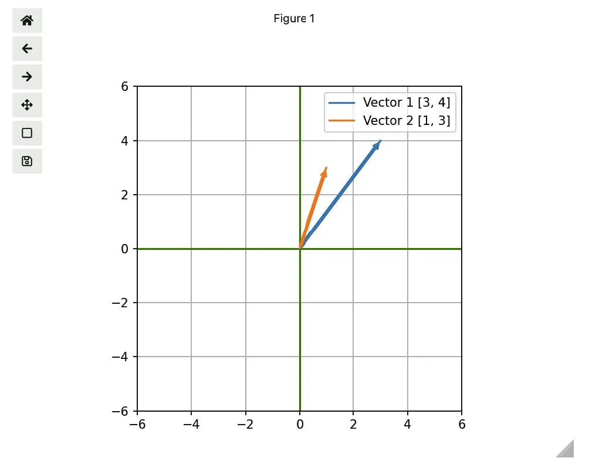
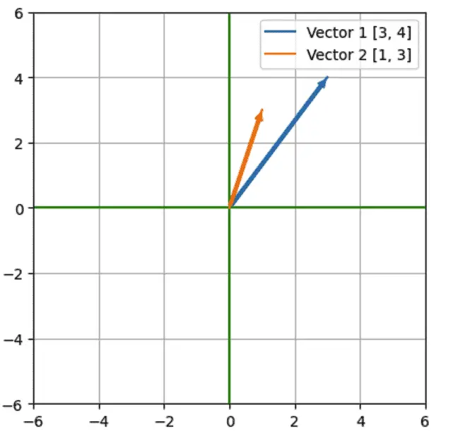
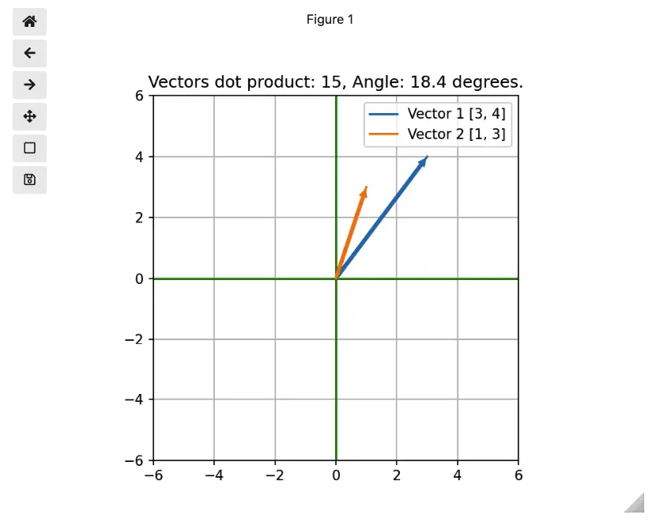
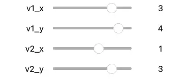

Creating a Python Interactive Plot Using Matplotlib in Jupyter¶
While static plots tell a story with data, interactive plots let your users explore that story on their own. Simple interactive plots allow for basic operations like scaling or panning a view, which is often necessary to make the data relationships appear at all. More advanced plots allow the user to select features, filter or sort data, or change the variables on which the plot depends.
The Python community has developed many tools for interactive plotting, so we’ll first briefly discuss the options that are available. As always, this article will:
Show you how to set up your project
Walk you step by step through several examples
Share the code with you as a starting point for your exploration
Python Libraries For Interactive Plots¶
The Road Ahead: What This Article Covers¶
There is no shortage of software tools and development environments that allow for data visualization, but we begin our discussion with Matplotib and Ipywidgets, two mainstream solutions. We call these solutions mainstream because Jupyter Notebook and Jupyter Lab are favorites of the Python data science community and anyone whose task involves publishing results. This makes IPywidgets a natural choice for a control library. For plotting data in Jupyter or IPython, the most widely used tool in the Python community is the time-honored, open-source library, Matplotlib.
Although most people think of Matplotlib as a tool for static plots, it allows for basic interactivity such as panning, zooming, etc. Moreover, since Seaborn is a superset of Matplotlib, these features are also available there as well.
To go beyond the basic interactivity that Matplotlib provides out of the box, we can add custom controls using the Jupyter Widgets library (Ipywidgets), which is a set of interactive browser controls (user interface widgets) that work in Jupyter Notebook and Jupyter lab. Using IPyWidgets, you can change the data that’s displayed in the charts, select features to display, or other actions.
In this article, we’ll develop an example that plots two-dimensional vectors using Matplotlib, and allows changing the contents of the vectors using slider controls.
The Road Not Taken: Other Choices for Interactive Plots¶
A number of other libraries rely on mediating between Python code running on a server and JavaScript code running in the browser, typically via a JSON payload. One such tool is Bokeh, in which the Python code runs in the Bokeh server. You can forego the server and run “standalone Bokeh” in Jupyter, but in this case, you forego interactivity.
Two other tools in this space are Vega-Altair and Plotly, which also mediate between a Python backend and JavaScript in the browser. We have not yet examined Vega-Altair, but according to its website, it integrates seamlessly with Jupyter Notebook and Jupyter Lab. We may examine Vega Altair in a later article.
Plotly is a tool that’s often discussed as the graphing library used in a Dash application. Dash is a Python web framework that allows you to code custom controls and respond to events on the server side. Therefore, to add interactive features to your Plotly graph, you can run it from within a Dash application. Dash applications can be run as open source Python applications that launch a Flask-based server or in the commercially available Dash Enterprise. There’s also a third-party tool, JupyterDash, for integrating Dash interactivity into Jupyter Lab. However, we haven’t had success with this library after several attempts, so our opinion as of this writing is that it’s not ready for primetime.
Matplotlib and in Jupyter Lab: First Steps¶
The code for this article is located in the matplotlib-ipywidgets directory of our repository, python-plot-examples, or you can follow along below. We begin by installing the necessary libraries in our Python environment using the following requirements.txt:
# To install, use:
# pip install -r requirements.txt
numpy==1.23.2
matplotlib==3.5.3
jupyterlab==3.4.6
ipywidgets==8.0.2
ipympl==0.9.2
With the packages we need installed, we need to enable the Jupyter Lab extension to support ipywidgets, our interactive controls library:
jupyter labextension install @jupyter-widgets/jupyterlab-manager
At this point we’re ready to launch Jupyter in the usual way:
jupyter lab
Building the Plot¶
Our goal is to first plot two vectors in “standard position”. Standard position means the vector tail starts at the origin of the Cartesian X and Y plane, (0,0). Given a two-element vector, for example, vector_1 = [3,4], we can then interpret those two elements as the X and Y coordinates of the vector head.
We begin by enabling some our the matplotlib interactive features that we’ll need later, importing what we need at this point, and declaring our two vectors as simple Python lists.
%matplotlib widget
import numpy as np
from math import acos, pi
import matplotlib.pyplot as plt
vector_1 = [3,4]
vector_2 = [1,3]
We next declare our two vectors:
vector_1 = [3,4]
vector_2 = [1,3]
Geometrically, a vector gives us a direction and a magnitude that’s independent of where the head and the tail are, but in standard position, we can treat each of the vectors above as being the (x,y) coordinates for the head (where the vector ends up), with the tail located at the origin, (0,0).
Next, we’ll add the code to draw our vectors and format the grid.
%matplotlib widget
import numpy as np
from math import acos, pi
import matplotlib.pyplot as plt
vector_1 = [3,4]
vector_2 = [1,3]
def get_label(which_vector, vector):
"""Labels a vector with its name and vector head coordinates"""
return f"{which_vector} {vector}"
def plot_line(vector, label):
"""Plots a vector in standard position"""
line = plt.plot([0,vector[0]], [0, vector[1]], label=label)[0]
# Draw as an arrow, as vectors are generally drawn
line.axes.annotate('',
xytext=(0, 0),
xy=(vector[0], vector[1]),
arrowprops=dict(color=line.get_color(), arrowstyle="simple"),
size=10
)
def configure_graph_grid():
"""Set up a square grid axis"""
# Size
grid_min = -6
grid_max = 6
# Make it square and set limits
plt.axis('square')
plt.axis(( grid_min, grid_max, grid_min, grid_max))
# Plot x and y axes
plt.plot([grid_min, grid_max], [0,0], 'g')
plt.plot([0,0],[grid_min, grid_max], 'g')
plt.grid()
# Display the grid and the vectors
figure = plt.figure()
configure_graph_grid()
line_1 = plot_line(vector_1, get_label("Vector 1", vector_1))
line_2 = plot_line(vector_2, get_label("Vector 2", vector_2))
plt.legend()
plt.title(get_title(vector_1, vector_2))
plt.show()
Looking at the above example, the get_label function is a simple concatenation of the vector’s name and the vector itself. Beginning on line 14, in the plot_line function, we first plot the vector in standard position. The Matplotlib plot function takes an optional marker to apply to the end of the line, but does not support arrows in an arbitrary direction. Instead, we use the annotate method on the line.axes property to add a standard arrow to the head of our vector. One important part of this call is passing line.get_color() to the arrowprops argument. This ensures that the color of our line will match what we see in the label for the line that’s displayed with the legend.
Finally, beginning on line 28, the configure_graph_grid method is where we plot both the grid and the X and Y axes. An important call here is plt.axis('square'), without which Matplotlib would shape it as a wide rectangle, giving the impression that the axes don’t have the same scale.
Finally, beginning on line 44, we simply call the functions we’ve developed to plot the grid and the two lines, enable the legend, and call plt.show() to actually display the graph.
At this point, our graph looks like this:

As you can see, we already have some minimal “interactive” features in place. The controls on the left let us pan, zoom, and save the image, while the triangle at the bottom is a grab bar that lets us resize it. These features are exposed because we used “%matplotlib widget", which enabled ipympl, the package which gives us our interactive features in Jupyter. It’s a synonym for “%matplotlib ipympl”, which does the same thing. If we use %matplotlib inline, we’d get a static grid instead:

Displaying Information in the Title¶
Setting a title is simple enough. You simply pass a title as a parameter to the matplotlib.title function. However, we wanted to take it a step further to scratch our numerical Python itch a bit. If math isn’t your thing, feel free to skip this section and move onto the Dash section below. Meantime I promise not to spend too much time on it.
We want to display the angle between the vectors, and the dot product of the two vectors. NumPy gives us the dot product easily, and we’ll write the code to calculate the angle in the vector_angle function (below). Finally, the get_title function puts it all together into a string. Here are the changes we need to make.
# Add this code below the vectors_to_dataframe function
def vector_angle(vector1, vector2):
""" Compute the angle between the two vectors
(There's an issue with this that we'll fix later).
"""
radians = acos(np.dot(vector1, vector2) / (np.linalg.norm(vector1) * np.linalg.norm(vector2)))
return round(radians * 180/pi, 1)
def get_title(vector1, vector2):
return f"Vectors dot product: {np.dot(vector1, vector2)}, Angle: {vector_angle(vector1, vector2)} degrees."
# Add this code above the plt.show() command:
plt.title(get_title(vector_1, vector_2))
With these changes in place, we get a title that displays information about the vectors we’re displaying:

Interactive Data Visualization: Adding User Controls With Ipywidets¶
Using the Matplotib defaults, our graph is “interactive” in a very minimal sense, but it doesn’t allow the user to change the display vectors interactively. Of course, in a Jupyter environment like this, a user could also change the code relatively easily, but allowing the user to interact with the data without modifying the code makes it more clear what the user of the notebook is meant to explore. Moreover, we’re keeping our example simple from a data point of view with only two small vectors (lists), but as the source data grows in complexity, so does the value of supporting users of the notebook with interactive controls.
Let’s first discuss the new code that we need for interactivity. To see how it all fits together in such a way that the controls for the data values and the plot appear in the same cell, you can view or download the full notebook source here. This consolidated code also removes some redundancy that gets introduced in the do_update function (see below).
The IPywidgets library contains a number of intereractive controls including sliders, dropdowns, text fields, and many others. You can see the complete list of available controls, but if you have done any user interface programming, you may already be guessing that our task will involve:
Displaying the controls on the screen, in this case, in the Notebook.
Adding one or more event handlers to update their state.
In response to the updated state, redrawing any related user interface (in this case, the plot we developed in the last section).
With that broad outline in place, the code itself is below. We’ll discuss it following the code listing.
from IPython.display import display
from ipywidgets import interactive
import ipywidgets as widgets
def do_update(v1, v2):
"""Based on the new control state, update the interactive plot.
The approach here is to clear and redraw the whole plot rather than simply to update
the lines. Simply setting new x and y data for the lines works in the line case, but
doesn't because we're drawing them as arrows.
"""
figure.clf()
configure_graph_grid()
line_1 = plot_line(v1, get_label("Vector 1", v1))
line_2 = plot_line(v2, get_label("Vector 2", v2))
plt.legend()
plt.title(get_title(v1, v2))
plt.draw()
plt.legend()
def handle_event(v1_x, v1_y, v2_x, v2_y):
"""Process events from the ipywidgets.interactive handler.
Argument names in the event handler must match the keys in the "interactive" call (below).
"""
# Repack the x and y coordinates into two vectors, and call do_update to process the change.
vector1 = [v1_x, v1_y]
vector2 = [v2_x, v2_y]
do_update(vector1, vector2)
def slider_config(value):
"""Return an IntSlider widget with the common configuration"""
return widgets.IntSlider(min=-6, max=6, step=1, value=value)
# Make the slider controls interactive, and display them
slider_controls = interactive(handle_event,
v1_x=slider_config(vector_1[0]),
v1_y=slider_config(vector_1[1]),
v2_x=slider_config(vector_2[0]),
v2_y=slider_config(vector_2[1]))
display(slider_controls)
Our slider controls won’t win any user interface beauty awards, perhaps, but they work correctly.

Discussion¶
Once we import what we need, we create a do_update function, which takes the data passed from the controls and redraws the plot.
If you were paying very close attention earlier when we displayed the static plot, you may have wondered why we created an unused figure object in the line figure = plt.figure(). The purpose of that call was to take the plotting calls we were making at the end of our first section and remember them, so we could clear the plot before updating it. We found this to be necessary because setting the data on the lines directly doesn’t work in the case of arrows, so as in most UI work, we find the corner cases pretty quickly.
The next several lines of do_update (lines 14-20) are very close to what we did when we originally drew the plot, with the exception of “draw” instead of “show”. We’re updating the vectors themselves, their labels, and the title of the plot. As mentioned earlier, the consolidated code simply calls both in response to the sliders changing and to display the initial grid.
The actual event handler we pass to our slider controls is not do_update, however, but a thin event handler, which you’ve no doubt guessed is called handle_event (lines 22-32). Here we simply repackage the x and y coordinates into vectors and call do_update with the two vectors.
We pass the current values of our formerly “static” plot as the value parameter to slider_config (lines 35-37) which returns an IntSlider widget. This is convenient since all our sliders are configured the same way otherwise.
Finally, on lines 41-46, we set up an “interactive” object. This ipywidgets class is a kind of container for widgets that can be treated as a group, and which will call the event handler passed to it whenever the value of any of its contained widgets changes. This is exactly what we want in this case since it means we can handle all the user interactions from the slider controls in a single event handler.
Interactive Plots: A Fringe Benefit¶
Once upon a time as a back-end developer, I spent a lot of time coding unit tests. Unit tests at that level tend to be easier to get right and less brittle than unit tests on the front end. Fortunately, people who spend their time developing user interfaces may be able to get away with somewhat less unit testing, because they get instant feedback from the interface they’re developing.
Back in the code for vector_angle, we left an I.O.U. for a bug fix: “(There’s an issue with this that we’ll fix lat r).” I found this bug while testing out the slider controls, and noticing were getting a math domain error. The cause turned out to be a floating-point rounding conditions leading to cosines outside the range we were expecting. While fixing that, we also noticed a possible divide by zero condition, so we added some defensive code for that, too. Here’s the corrected code:
def vector_angle(vector1, vector2):
"""Compute the angle between the two vectors"""
norm1 = np.linalg.norm(vector1)
norm2 = np.linalg.norm(vector2)
# Prevent divide by zero
if norm1 == 0 or norm2 == 0:
return 0
# From the formula for angle between vectors, c.f.
# https://www.cuemath.com/geometry/angle-between-vectors/
cos_of_angle = np.dot(vector1, vector2) / (norm1 * norm2)
# Make sure the cosine is in range -1 <= cos(angle) <= 1
if cos_of_angle > 1:
cos_of_angle = 1
elif cos_of_angle < -1:
cos_of_angle = -1
radians = acos(cos_of_angle)
return round(radians * 180/pi, 1)
Matplotlib Plus IPywidgets: Some Final Thoughts¶
When I first began looking at interactive plotting tools in Python, most of the resources I found treated Matplotlib as only a static plotting tool, which is incorrect. Instead, the availble resources mainly focused on writing web applications in Plotly and Dash. Though I may revisit them in a future post, I found that JupyterDash didn’t provide the ease of integration I hoped for between Dash and my favorite environment, Jupyter Lab. Dash really wants to run in a standalone server, not in Jupyter, which itself is a server. This is why in the end I decided to go with IPywidgets, even if this brought with it some styling limitations.
For example, an outstanding issue you may notice when running the consolidated notebook is that the widgets and the plot do not align perfectly. Passing a small figsize parameter to plt.figure(), for example plt.figure(figsize=(4, 4)) is a workaround here, but we’re leaving aside a more in-depth investigation of the styling options that are available.
One final note is that when most people think of interactive graphs in Python, the first thing that comes to mind is probably how to do that with a Pandas dataframe. Though we developed a non-Pandas sample here, the same techniques we used would allow you to update a graph from a dataframe. Moreover, since Seaborn is based on Matplotlib, one could use these techniques with a more “Pandas-friendly” library without much trouble.